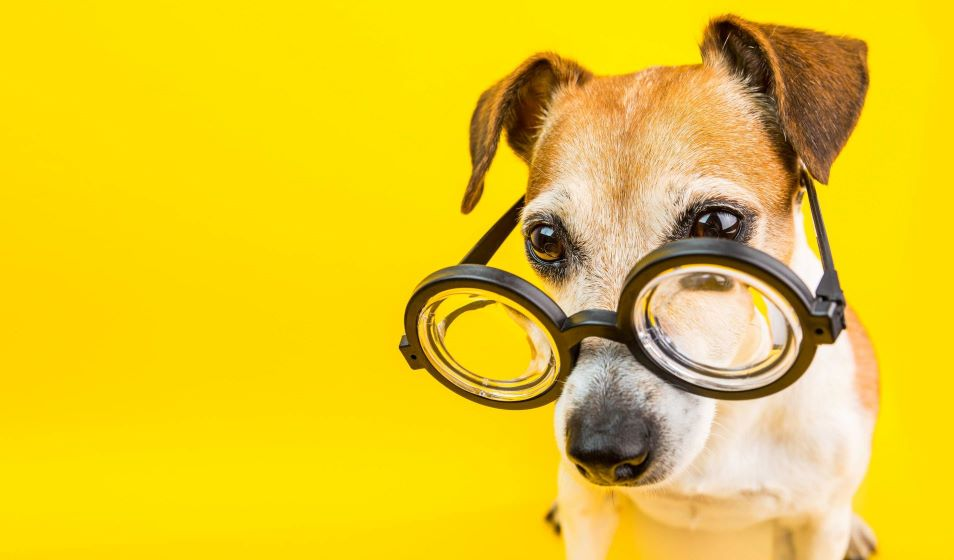

Soft Skills
As Soft Skills são características comportamentais de uma pessoa, bem mais relacionadas à personalidade e às experiências, do que à formação profissional.
Elas são divididas em categorias e cada uma delas apresentam seus atributos:
- Cognitivas
- Criatividade
- Oratória
- Pensamento Crítico
- Interpessoais
- Confiança
- Responsabilidade
- Empatia
- Intrapessoais
- Inteligência Emocional
- Autodisciplina
- Organização
Referência
